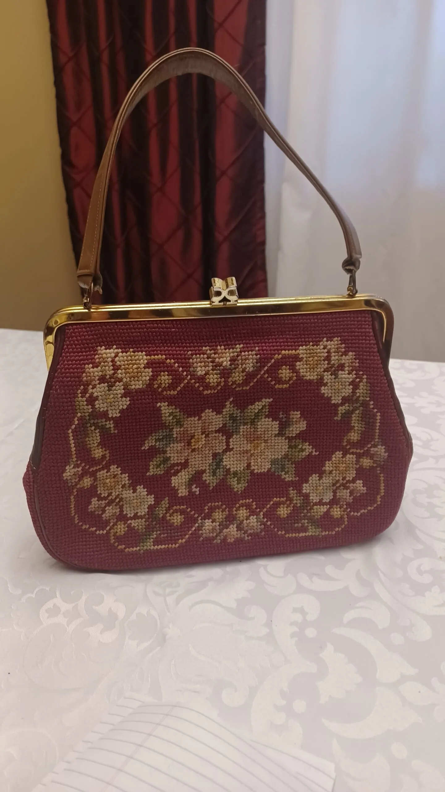
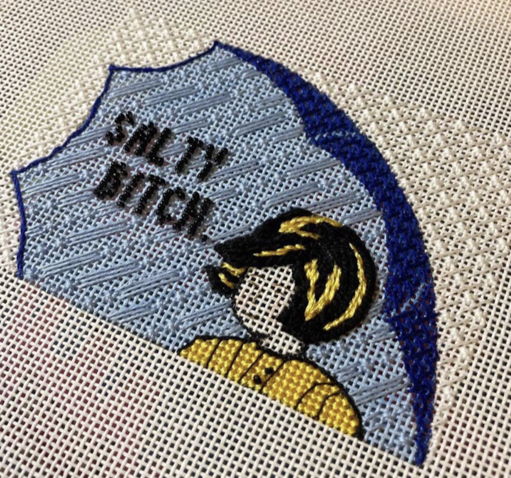

Needlepoint subculture is a creative and cultural movement centered around the revival and reinvention of traditional needlepoint as a form of personal expression, community building, and subtle resistance. At its simplest, needlepoint is a form of embroidery where yarn or thread is stitched through a stiff canvas to create decorative designs. But within this subculture, it becomes something much more layered: a medium for storytelling, identity, and commentary.

Things to remember!
- Needlepoint can appear pixalated due to the nature of the craft, great X like stiches that can give a piece a distorted or even blurry appearance
- Needlepoint started around the year 1500 BC, origanilly a way to mend items liek clothing and tents it turned decortive as the years went on
The people who participate in needlepoint subculture are diverse, but they are often united by a shared desire to slow down and create something tangible. Many are younger artists, designers, and hobbyists, especially from Gen Z and millennial communities. Who have rediscovered needlepoint through social media platforms, craft circles, or family traditions. At the same time, longtime practitioners, including older generations who have been stitching for decades, are also part of the subculture. This mix creates a generational exchange where techniques, patterns, and ideas are passed down and then reimagined in new ways.

Participants range from casual hobbyists stitching small decorative pieces at home to dedicated artists who push the boundaries of what needlepoint can be. Some focus on traditional patterns, florals, landscapes, or geometric designs, while others use the canvas as a space for bold, contemporary expression. It’s common to see pieces that include text, humor, political messages, or abstract imagery. This have proven that the needlepoint subculture challenges the assumption that craft is purely decorative or apolitical. Instead, it frames needlepoint as a legitimate artistic and communicative practice.
In a culture that prioritizes instant results and constant productivity, needlepoint requires patience and sustained attention.
The subculture is both gentle and quietly defiant. On the surface, needlepoint carries associations of comfort, domesticity, and nostalgia. But within the subculture, these associations are often intentionally subverted. Soft textures and familiar techniques are used to deliver unexpected or provocative messages. A delicately stitched piece might contain sharp humor, critique societal norms, or explore themes of identity, gender, and labor. This contrast is a defining feature it’s what makes the works feel both approachable and powerful.

Another key aspect of needlepoint subculture is its emphasis on process over speed. In a culture that prioritizes instant results and constant productivity, needlepoint requires patience and sustained attention. Each piece can take hours, days, or even weeks to complete. For participants, this slowness is not a drawback but a core value. It allows for mindfulness, reflection, and a deeper connection to the act of making. The imperfections in each piece, uneven stitches, slight variations in tension, are not flaws but evidence of the human hand.
These communities are often inclusive and collaborative, encouraging experimentation and personal voice rather than strict adherence to tradition. The spirit of needlepoint subculture is embracing both its roots and its evolution. Its is one of intentional creativity and quiet resistance: a celebration of making things slowly, thoughtfully, and with purpose. It highlights how a seemingly simple craft can become a meaningful way to engage with the world one stitch at a time.